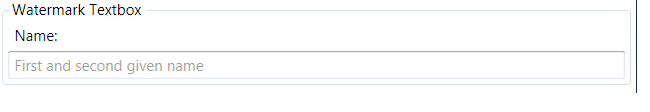
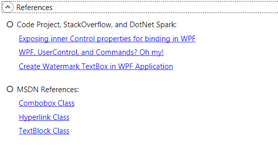
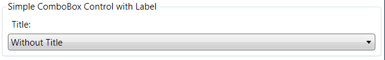
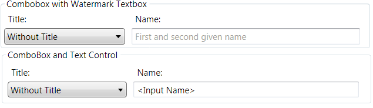

Introduction
The Windows Presentation Foundation (WPF) offers at least two ways of implementing controls. There are User Controls and Custom Controls.
User Controls are composed of one or more standard controls (and cannot be styled) while Custom Controls either extend existing controls or start
from scratch (and can be styled). This series of two articles shows a particular simple but effective technique for implementing Custom Controls
and extends one of them in the second article into a theme-able (Custom Control).
The article assumes that you have a working knowledge of WPF. In particular, knowledge of Dependency Properties and Commanding are required.
I sometimes observe myself doing repetitive things when designing input forms: put a label here, put a textbox there, put another label and another textbox ...
you get the picture. And the problem sometimes gets even worse when I find that a need a Margin of 3 on all labels and a margin of 0 on all textboxes...
This article shows a technique that lets us declare a new control that is, for example, composed of a label and a textbox, with the addition of a new TextBoxLabel property which can be used in XAML to set the text of the label but let the control decide where to put the label in relation to the textbox.
This way, the number of elements in the XAML is reduced and an input form containing a few controls is easy to maintain because the content is likely to look more consistent. Let's have a look at a:
- Textbox (with Watermark) and Label
to understand how this works and extend this concept later with a
- Hyperlink with custom tooltip and context-menu
- Combobox and Label, and a
-
Labeled Combobox and Textbox
This concept is later extended with a second part that shows how one of the controls discussed here can be turned into a look-less custom control.
Compiling the code
StyleCop
I use StyleCop in my projects to make the code readable in a uniform way. So, if you should get an error when compiling the project, you can either download and install StyleCop, or edit/remove the corresponding entries in each
.csproj file:
<Import Project="$(ProgramFiles)\MSBuild\StyleCop\v4.7\StyleCop.Targets" />
Textbox (with Watermark) and Label Composition
The Watermark textbox control behaves like a normal textbox with the addition of being labeled and displaying a watermark in the text portion.
The watermark disappears as soon as the user starts typing.

This control is declared in the TestWindow.xaml like so:
<textbox:TextBoxWithWatermark
Text="" Watermark="First and second given name" LabelTextBox="Name:" />
The Text property can be used to read and write the text entered in the textbox. You can use this just like the Text property on the standard textbox control.
The Watermark property can be used to set the text that is shown in the textbox when the user has not entered anything, yet.
The LabelTextBox property sets the text
of the label that is shown above the textbox.
Normally, none of the above properties are this easily available, because the control composition leads to hiding internal elements. The solution is in the XAML of the
TextBoxWithWatermark user control. This is where internal properties (content property of label) and external properties (LabelTextBox) are bound such that both appear to be one.
<Label Content="{Binding Path=LabelTextBox, RelativeSource={RelativeSource FindAncestor, AncestorType=local:TextBoxWithWatermark, AncestorLevel=1}}"
HorizontalAlignment="Left" VerticalAlignment="Bottom"
Grid.Column="0" Grid.Row="0"/>
The above XAML code is contained in the
TextBoxWithWatermark.xaml file. The binding statement in the Content of the label control binds to the LabelTextBox Dependenncy Property of the
TextBoxWithWatermark control. This is backed by the following standard dependency property code pattern:
private static readonly DependencyProperty LabelTextBoxProperty =
DependencyProperty.Register("LabelTextBox", typeof(string), typeof(TextBoxWithWatermark));
public string LabelTextBox
{
get { return (string)GetValue(TextBoxWithWatermark.LabelTextBoxProperty); }
set { SetValue(TextBoxWithWatermark.LabelTextBoxProperty, value); }
}So, in a nutshell: We declare a TextBoxWithWatermark control in the demo window and bind to its dependency properties. And the DPs of the
TextBoxWithWatermark control bind to each property of the corresponding control in the composition.
Voila. Other than that, nothing else is needed to get an XAML value through
a user control (TextBoxWithWatermark) to the (Label) original control.
I adopted this particular way of
implementing the watermark from elsewhere: Create Watermark TextBox in WPF Application. The original approach proposed to use a textbox with a transparent background and have the textbox shine through that transparent background. This caused a problem in ExpressionDark since the background is black and WPF uses a black cursor on a transparent background. I fixed this problem by:
- removing the transparent background on the textbox
- putting the textblock on top of the textbox (declare the textblock after the textbox) and
- setting the textblock to
IsHitTestVisible=false (to route all inputs to the textbox).
Hyperlink with custom tooltip and Context-Menu
The Hyperlink control behaves like a normal Hyperlink except that this one is optimized
for web hyperlinks. It shows the URL in its tooltip and the user can use a context menu on it to:
- Copy & Paste the URL
- To navigate to the URL (instead of clicking the underlined portion)

This control is declared in the TestWindow.xaml like so:
<hyperlink:WebHyperlink Text="Exposing inner Control properties for binding in WPF"
NavigateUri="http://stackoverflow.com/questions/4169090/exposing-inner-control-properties-for-binding-in-wpf"
Grid.Column="1" Grid.Row="1" Margin="6, 3" VerticalAlignment="Center"/>
We can check the XAML portion of the WebHyperlink control to find that it is quite similar to the
TextBoxWithWatermark control.
<TextBlock Text="{Binding Path=Text, RelativeSource={RelativeSource FindAncestor, AncestorType=hyperlink:WebHyperlink, AncestorLevel=1}}" />
We have a Text property that is bound to the Text property of a textblock, which is placed inside the content portion of a standard hyperlink control.
The same appears to be true for the NavigateUri property on the Hyperlink control.
The Hyperlink control also contains a RequestNavigate event which is triggered when a user clicks on the hyperlink. This executes this code:
private void Hyperlink_RequestNavigate(object sender, System.Windows.Navigation.RequestNavigateEventArgs e)
{
Process.Start(new ProcessStartInfo(e.Uri.AbsoluteUri));
}
A similar code is executed if the NavigateToUri command is executed. Note that the target of the navigation is supplied as command parameter:
private static void Hyperlink_CommandNavigateTo(object sender, ExecutedRoutedEventArgs e)
{
if (sender == null || e == null) return;
e.Handled = true;
WebHyperlink whLink = sender as WebHyperlink;
if (whLink == null) return;
Process.Start(new ProcessStartInfo(whLink.NavigateUri.AbsoluteUri));
}
The context menu binds via commanding (plus parameter) to the Hyperlink control. You can take this as an example of how commands can be more flexible
by using command parameters. Interesting is also the CommandTarget bit.
<ContextMenu>
<MenuItem Header="Copy Url to Clipboard"
Command="{x:Static hyperlink:WebHyperlink.CopyUri}"
CommandParameter="{Binding ElementName=PART_Hyperlink, Path=NavigateUri}"
CommandTarget="{Binding PlacementTarget,
RelativeSource={RelativeSource FindAncestor, AncestorType={x:Type ContextMenu}}}"/>
<MenuItem Header="Open Target in Browser"
Command="{x:Static hyperlink:WebHyperlink.NavigateToUri}"
CommandTarget="{Binding PlacementTarget,
RelativeSource={RelativeSource FindAncestor, AncestorType={x:Type ContextMenu}}}"/>
</ContextMenu>
The CommandTarget bit is necessary because the command would otherwise not be executed. The command would not be executed because the context menu has the
keyboard focus and is not in the same visual and logical tree as the hyperlink is.
References
Whether the additional functions are useful or not is another matter. But just imagine the work we would have if we had to declare this each time we want to use a hyperlink.
Combobox and Label Composition
The ComboBoxWithLabel control behaves like a normal ComboBox but it comes with the addition of a label placed on top of it.

Composing a control with a combobox (or any other control with an ItemsControl at its core) means a little bit more work because there are a few dependency properties that are useful. Nevertheless, the control exhibits the same XAML binding mechanisms as we have seen before:
SelectedItem="{Binding RelativeSource={RelativeSource FindAncestor, " +
"AncestorType=local:ComboBoxWithLabel, AncestorLevel=1}, Path=SelectedItem}"
private static readonly DependencyProperty SelectedItemProperty =
ComboBox.SelectedItemProperty.AddOwner(typeof(ComboBoxWithLabel));
public object SelectedValue
{
get { return (object)GetValue(ComboBoxWithLabel.SelectedValueProperty); }
set { SetValue(ComboBoxWithLabel.SelectedValueProperty, value); }
}
The data displayed in the comboboxes is loaded from an ObjectDataProviderdefined in the resources section of the
TestWindow class. The ObjectDataProvider itself receives its data from a static method declared in the collections class. This static method generates a dictionary based on an enumeration.
Combobox and Textbox with Label Composition

These samples are really just compositions of the combobox with label and the textbox with watermark and label samples discussed above. so, assuming that you have read and understood the above, there is not much new here, except that we have yet another composition of controls that might be useful being placed as one solid composition. You can use this to review the binding pattern
one more time. Go back to the samples discussed above if you find this to be too complex to understand.
Conclusions
Simple control composition is an affective method for re-using UI code multiple times. It ensures that similar controls look and behave similar even if they occur a few hundred times in a large application. Adding special behaviors
or properties to existing controls has never been easier.
Please take a moment time to rate this article and give me your feedback.
Further Developments
The controls in this article cannot be themed in the sense that they are look less. Although, they can be themed if they are made up of theme-able controls. The Combobox with Label control is, for example, theme-able as long as each theme contains a ControlTemplate for a Combobox control and a ControlTemplate for a Label control. But the control is not look-less because the Label will always appear on top of the Combobox.
Worse still, the watermark of the textbox control discussed above may even be invisible because its color cannot be defined in a style or
ControlTemplate.
Part two of this article series shows how simple controls can be themed by developing the watermark textbox control
into a skin-able control and adding three demo themes to the demo application.
History
-
20-February 2012: Initial creation.
- 16-March 2012: Small patch in source code (Binding to
WebHyperlink Uri and Text dependency properties works now)